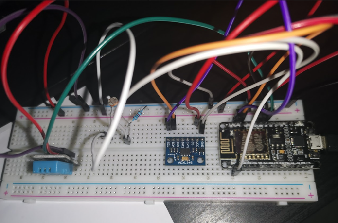

It’s a natural disaster /phenomenon puzzle, the user is given 3 hints, volcano, lightning, earthquake, using the hints the user knows that a volcano has a high degree in temp, so the degree of DHT11 sensors must be increased more than 24 C, lightning is also a natural phenomenon where currentet is emitted in the form of light so the user should shed some light on the LDR sensor to increase it value, finally the earth quake where user should move the project upside down (shaking) as a natural result of earthquake.

/*
Arduino and ADXL345 Accelerometer Tutorial
by Dejan, https://howtomechatronics.com
*/
#include // Wire library - used for I2C communication
//FirebaseESP8266.h must be included before ESP8266WiFi.h
#include "FirebaseESP8266.h"
#include
#include "DHTesp.h"
#define FIREBASE_HOST "cpit490-group1-default-rtdb.firebaseio.com"
#define FIREBASE_AUTH "OulBfjIITttq7QL9vUMtxls42xucwX47j2GvRDxY"
#define WIFI_SSID "KODO"
#define WIFI_PASSWORD "bestway17"
int ADXL345 = 0x53; // The ADXL345 sensor I2C address
float X_out, Y_out, Z_out; // Outputs
//Define FirebaseESP8266 data object
FirebaseData firebaseData;
int ldrPin = A0;
#define DHTpin D5
DHTesp dht;
void setup() {
Serial.begin(115200); // Initiate serial communication for printing the results on the Serial monitor
Wire.begin(); // Initiate the Wire library
// Set ADXL345 in measuring mode
Wire.beginTransmission(ADXL345); // Start communicating with the device
Wire.write(0x2D); // Access/ talk to POWER_CTL Register - 0x2D
// Enable measurement
Wire.write(8); // (8dec -> 0000 1000 binary) Bit D3 High for measuring enable
Wire.endTransmission();
delay(10);
pinMode(ldrPin, INPUT);
dht.setup(DHTpin, DHTesp::DHT11);
WiFi.begin(WIFI_SSID, WIFI_PASSWORD);
Serial.print("Connecting to Wi-Fi");
while (WiFi.status() != WL_CONNECTED)
{
Serial.print(".");
delay(300);
}
Serial.println();
Serial.print("Connected with IP: ");
Serial.println(WiFi.localIP());
Serial.println();
Firebase.begin(FIREBASE_HOST, FIREBASE_AUTH);
Firebase.reconnectWiFi(true);
}
void loop() {
// === Read acceleromter data === //
Wire.beginTransmission(ADXL345);
Wire.write(0x32); // Start with register 0x32 (ACCEL_XOUT_H)
Wire.endTransmission(false);
Wire.requestFrom(ADXL345, 6, true); // Read 6 registers total, each axis value is stored in 2 registers
X_out = ( Wire.read() | Wire.read() << 8); // X-axis value
X_out = X_out / 256; //For a range of +-2g, we need to divide the raw values by 256, according to the datasheet
Y_out = ( Wire.read() | Wire.read() << 8); // Y-axis value
Y_out = Y_out / 256;
Z_out = ( Wire.read() | Wire.read() << 8); // Z-axis value
Z_out = Z_out / 256;
Serial.print("Xa= ");
Serial.print(X_out);
Serial.print(" Ya= ");
Serial.print(Y_out);
Serial.print(" Za= ");
Serial.println(Z_out);
int ldrStatus = analogRead(ldrPin); // connect LDR with Arduino
float ldrValue = ldrStatus * (5.0 / 1023.0); // Convert the analog reading
Serial.print("LDR value: ");
Serial.println(ldrValue);
delay(dht.getMinimumSamplingPeriod());
float temperature = dht.getTemperature();
Serial.println("temp is: ");
Serial.println(temperature);
if (temperature >24 && Y_out > 50 && ldrValue > 3 ){
Serial.println("You win");
Firebase.setString(firebaseData, "Nhian_Result", "Win");
}
delay(1000);
}